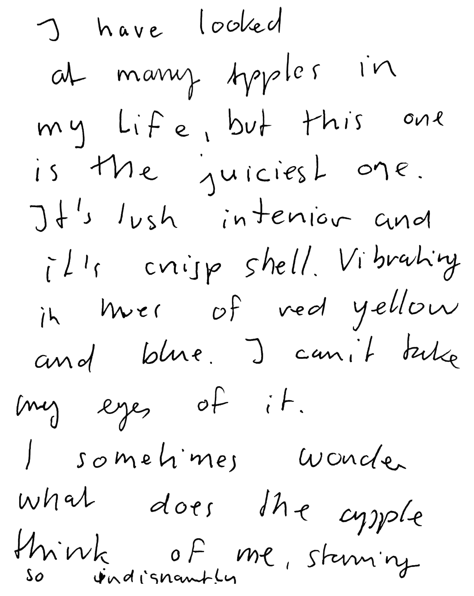
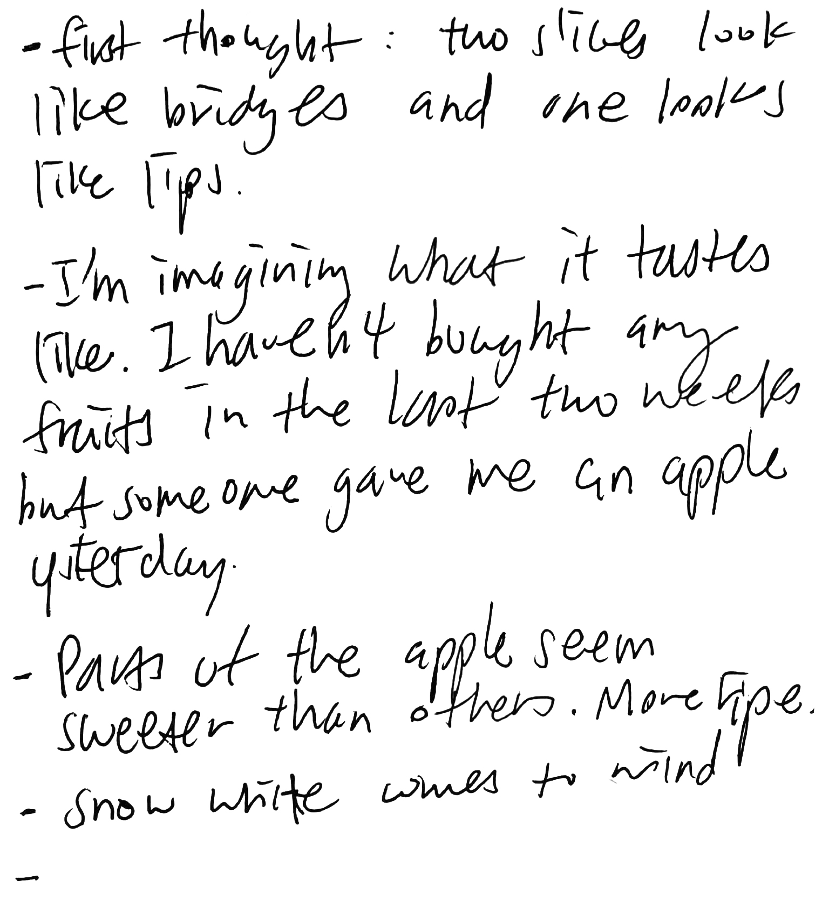
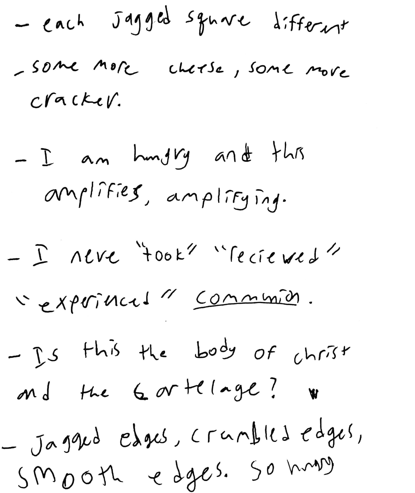
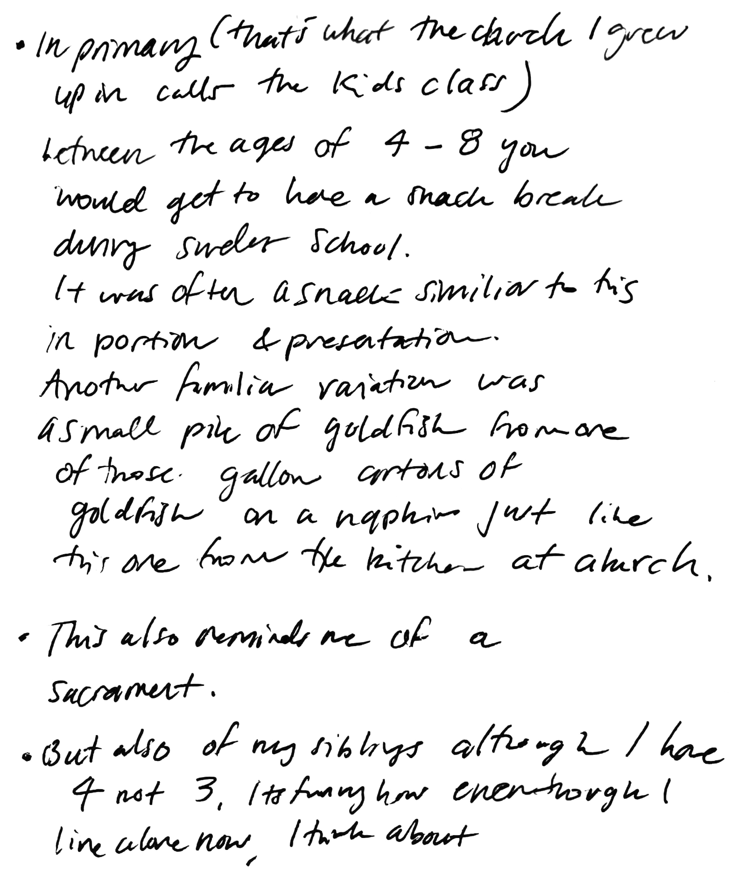

This apple came from the apple picking I did this weekend with Alice, Dave, and Jeanette. We went to Apple Dave’s Orchard. Not Dave’s apple orchard, but Apple Dave. It was a perfect fall day. Like BLANK our of a romcom taken direct out of a BLANK. We ate the apples straight from the tree and they were sweet and juicy and all the leaves were changing color and it wasn’t cold at all, but that perfect time where you can wear a jacket if you want to not because you have to. And we played badminton on the uneven ground behind the trees.
I have looked at many apples in my life, but this one is the juiciest one. It’s lush interior and its crisp shell. Vibrating in hues of red, yellow, and blue. I can’t take my eyes off it. I sometimes wonder what does the apple think of me, staring so indignantly.
-first thought: two slices look like bridges and one looks like lips. -I’m imagining what it tastes like. I haven’t bought any fruits in the last two weeks but someone gave me an apple yesterday. -Parts of the apple seem sweeter than others. More ripe. -Snow White comes to mind -
Desire feels like faith to me. To place your wishes on some imagined reality you crave and the distance between yourself and having it. Faith is consistent belief, which relates to the strength of desire and the level of faith you have in the reality of your desires. I find that I often link desire and reality closely with each other. As they stand for me, desire is cause and reality is effect.
I concocted and conducted a ritual that spoke on these larger concepts (desire, faith) and while also considering religion in a macro format: it being a shared experience that is highly individualized. Each person developing and maintaining their own relationship with god, or whomever. I found it apt to recount and write about an individual experience about an object as a metaphor for religion. As one writes about the object, they are relating to the object; connecting it with it.
by Darnell Henderson
—————
Instructions
When I'm looking at the cheese I feel I am a mouse looking and waiting for the dinner. Like I am in a mouse hole looking outside and waiting for a chance to catch the cheese, and then bring it back home and eat. I am also thinking of my first experience to eat cheese in this country. There’s no such cheese culture in CN.
-each jagged square different -some more cheese, some more cracker. -I am hungry and this amplifies, amplifying. -I never “took” “received’ “experienced” communion -Is this the body of christ and the cartilage? -Jagged edges, crumbled edges, smooth edges. So hungry
-In primary (that’s what the church I grew up in calls the kids class) between the ages of 4-8 you would get to have a snack break during Sunday school. It was often a snack similar to this portion and presentation. Another familiar variation was a small pile of goldfish from one of those gallon cartoons of goldfish on a napkin just like this one from the kitchen at church. -This also reminds me of a sacrament -But also of my siblings although I have 4 not 3. It’s funny how even though I live alone now, I think about